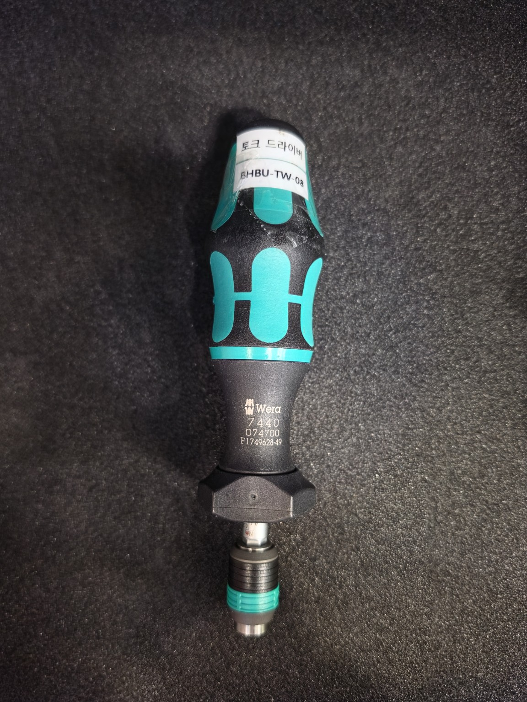
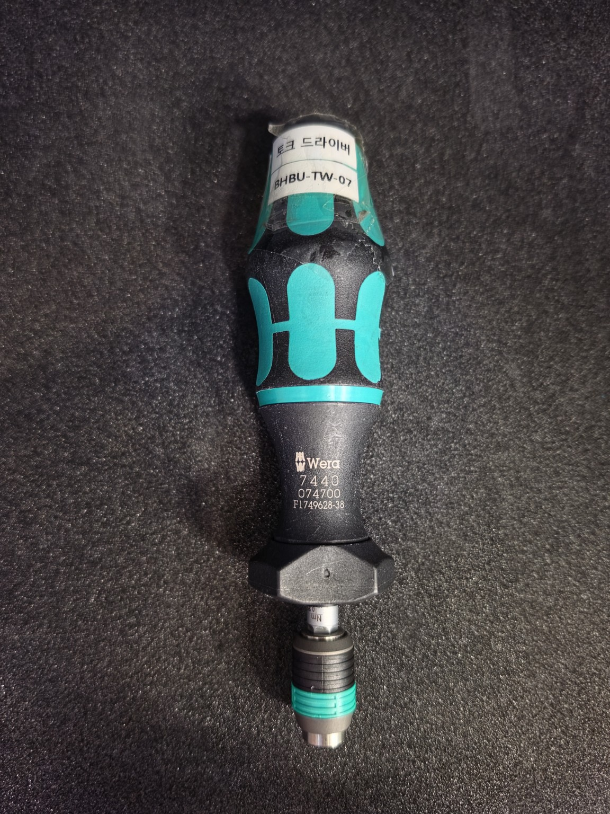
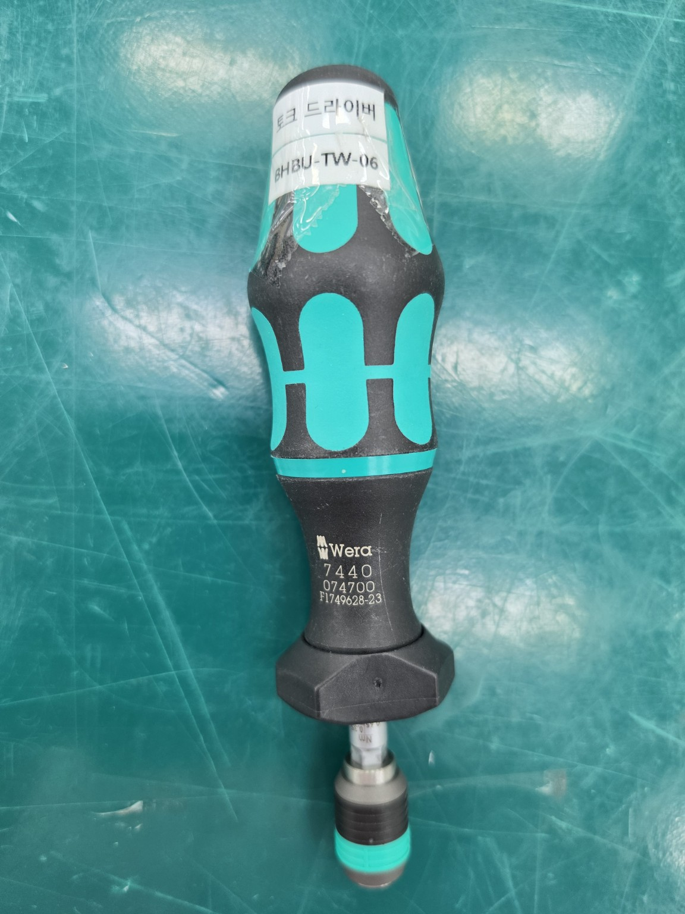
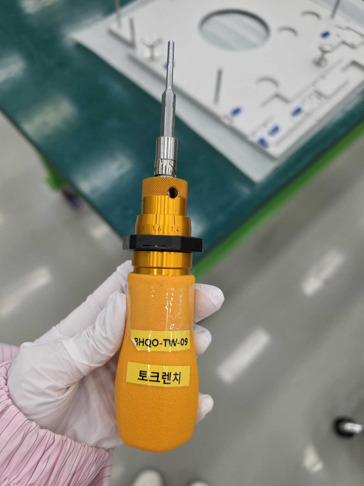
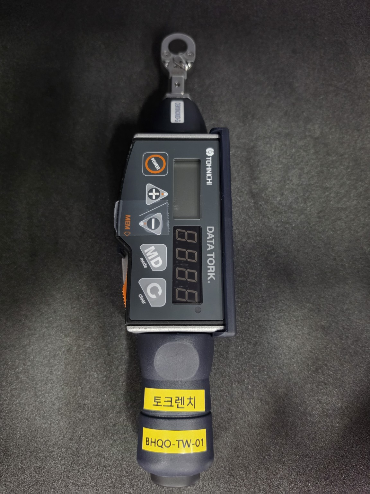
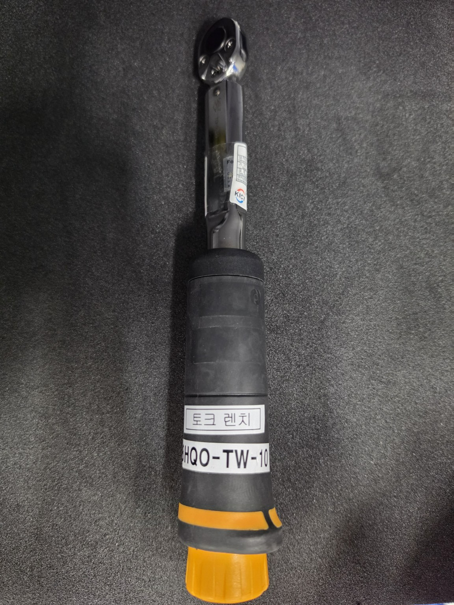

BHBU-TW-08
보유 장비토크 드라이버
모델: Wera 7440
시리얼: F1749628-49
관리부서: BU파트
토크 범위: 0.3–1.2 N·m 표기 / 추천 적용 범위 0.35–1.15 N·m
재질과 나사 조건을 선택하면 기준표의 토크값을 확인할 수 있습니다.
토크값 확인 시 범위에 맞는 장비가 여기에 표시됩니다.
| 재질 | 나사 | 조건 | 토크 (N·cm) |
|---|
별도로 확인할 토크값이 있다면 kgf·cm 단위로 입력해 장비 범위를 비교할 수 있습니다.

토크 드라이버
모델: Wera 7440
시리얼: F1749628-49
관리부서: BU파트
토크 범위: 0.3–1.2 N·m 표기 / 추천 적용 범위 0.35–1.15 N·m

토크 드라이버
모델: Wera 7440
시리얼: F1749628-38
관리부서: BU파트
토크 범위: 0.3–1.2 N·m 표기 / 추천 적용 범위 0.35–1.15 N·m

토크 드라이버
모델: Wera 7440
시리얼: F1749628-23
관리부서: BU파트
토크 범위: 0.3–1.2 N·m 표기 / 추천 적용 범위 0.35–1.15 N·m

토크렌치
모델: 모델명 확인 필요
시리얼: 442386K
관리부서: 품질보증팀
토크 범위: 6–26 kgf·cm

토크렌치
모델: Tohnichi CEM10N3X8D-G
시리얼: 705532H
관리부서: 품질보증팀
토크 범위: 2–10 N·m

토크렌치
모델: Tohnichi 100QL
시리얼: 089386M
관리부서: 품질보증팀
토크 범위: 20–100 kgf·cm
주의: BHBU 토크 드라이버는 전달받은 두 범위 중 좁은 0.35–1.15 N·m를 추천 기준으로 적용했습니다. kgf·cm는 N·m로 환산해 비교합니다. 사용 전 실제 장비 사양, 교정 유효기간 및 작업표준을 확인하세요. 범위 밖 장비는 사용하지 마세요.